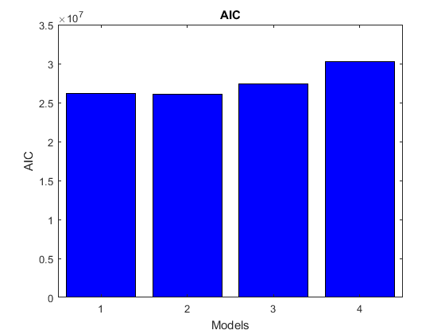

Compute AIC and BIC
Contents
Load default setting and configure experimental data
SBL_config_defaults;
sbl_config.data_dir_name = pwd;
sbl_config.data_file_name = 'toggleSwitch_1.csv';
sbl_config.exp_idx=1:3;
Generate multiple models by enforcing different sparsity coeficients.
sbl_config.sparsity_vec = [0.15 0.2 0.25 0.3]; MODELS=SBL_gen_model_family(sbl_config);
03-Sep-2019 16:08:09 | loop iter: 1, generating SBL data 03-Sep-2019 16:08:10 | file: toggleSwitch_1.csv was successfully imported | 3 experiments was selected 03-Sep-2019 16:08:10 | loop iter: 1, running SBL runnging sparsity case: 1/4 runnging SBL on state: 1/2 SBL iter: 1/10 took 1.90018 sec SBL iter: 2/10 took 5.11368 sec SBL iter: 3/10 took 3.8036 sec SBL iter: 4/10 took 9.00487 sec SBL iter: 5/10 took 6.10192 sec SBL iter: 6/10 took 4.68025 sec SBL iter: 7/10 took 4.42835 sec SBL iter: 8/10 took 3.59699 sec SBL iter: 9/10 took 4.81805 sec SBL iter: 10/10 took 3.53016 sec runnging SBL on state: 2/2 SBL iter: 1/10 took 0.961559 sec SBL iter: 2/10 took 0.811372 sec SBL iter: 3/10 took 0.797634 sec SBL iter: 4/10 took 0.769208 sec SBL iter: 5/10 took 0.794442 sec SBL iter: 6/10 took 0.779473 sec SBL iter: 7/10 took 0.789853 sec SBL iter: 8/10 took 0.797014 sec SBL iter: 9/10 took 0.805581 sec SBL iter: 10/10 took 0.79663 sec Elapsed time is 0.836457 seconds. state: x_1 zero_th: 9.49847e-05 dict_num: 6 (0.374298%) state: x_2 zero_th: 9.49847e-05 dict_num: 6 (0.747198%) ODE simulation OK ...
Compute AIC and BIC
[AIC,BIC,Chi2,NDATA,NPARS]=SBL_get_AIC_BIC(MODELS);
Plot AIC and BIC
Chi2 ((simulation-data)./error_data)'*((simulation-data)./error_data), where error data is the standard desviation/ AIC=Chi2+2*npars;BIC=npars*log(ndata)+Chi2(i)
bar(AIC,'b'); ylabel('AIC'); xlabel('Models'); title('AIC'); figure; bar(BIC,'r'); ylabel('BIC'); xlabel('Models'); title('BIC');